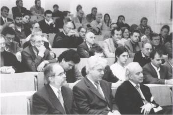
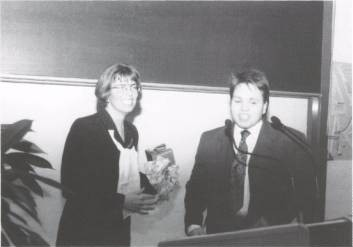
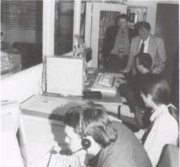

Eröffnungsfeier des Zentrums für Blinde und Sehbehinderte
Von links: Prof. Dr. Burkhard Kampschulte, Prof. Dr. Achim Kaufmann, Klaus Peter Möller
Bei der Eröffnung sprachen u. a. FH-Präsident Prof. Dr. Burkhard Kampschulte, Prof. Dr. Achim Kaufmann, Dekan des Fachbereichs Mathematik, Naturwissenschaften und Informatik, und Klaus Peter Möller, der Präsident des Hessischen Landtags. Seinen Betrieb hatte das Zentrum für Blinde und Sehbehinderte (BliZ) an der Fachhochschule in Gießen schon mit Beginn des Wintersemesters 1998/99 aufgenommen. Im vergangenen Dezember wurde die Einrichtung des Fachbereichs Mathematik, Naturwissenschaften und Informatik (MNI) mit einer Feierstunde auch offiziell eröffnet. Mehr als einhundert Teilnehmer, die aus der ganzen Bundesrepublik angereist waren, konnte Prof. Dr. Burkhard Kampschulte, Präsident der FH Gießen-Friedberg, begrüßen. „So außergewöhnlich der Anlass, so überraschend groß ist die Resonanz" sagte Kampschulte in seiner Eröffnungsansprache vor Gästen aus Politik, Wirtschaft, Wissenschaft, Verbänden und Bildungswesen. Das Zentrum in der Wiesenstraße, das einzigartig an deutschen Fachhochschulen ist, erleichtert blinden und sehbehinderten Studierenden durch seine ausgeklügelte technische Ausstattung das Studium erheblich. Seit Semesterbeginn studieren drei Informatiker und drei Betriebswirte am BliZ. Rekordverdächtig ist auch der Zeitraum von nur 10 Monaten, die von der ersten Idee der Initiatorin Dr. Erdmuthe Meyer zu Bexten bis zur Realisierung im September 1998 vergingen. Dieses Tempo sei nur möglich gewesen, so Kampschulte in seiner Rede, weil die Professorin für praktische Informatik sich konsequent um Sponsoren bemüht habe. Sie hätten in großer Zahl unbürokratisch das Projekt unterstützt und die Hälfte der 500.000 DM, die das BliZ kostete, aufgebracht. Public Private Partnership sei mehr als ein Schlagwort, nämlich „ein Weg, die Bürger einzubinden in öffentliche Projekte, manchmal der einzige Weg, um auch bei zurückgehenden öffentlichen Budgets Dinge zu finanzieren, deren Nutzen sich nicht zuerst nach wirtschaftlichen Kriterien messen lässt. Kampschulte dankte Meyer zu Bexten für „ihr Engagement und ihren unermüdlichen Einsatz" beim Aufbau des Blindenzentrums und schloss mit einem Zitat von Seneca: „Nicht weil etwas schwierig ist, wagen wir es nicht. Weil wir es nicht wagen, ist es schwierig.
Sponsoring als sinnvoller Weg
Landtagspräsident Klaus Peter Möller bescheinigte als Gastredner den Sponsoren, dass sie einerseits eine legitime Imagepflege betrieben, gleichzeitig aber ihre gesellschaftliche Verantwortung wahrgenommen und dem Gemeinwesen einen großen Dienst erwiesen hätten. Sponsoring, so kontrovers es auch im kulturellen Bereich diskutiert werde, könne ein sinnvoller Weg sein. Möller wünschte sich, dass solche Beispiele Schule machten. Zugleich stellte er für die Zukunft auch öffentliche Fördermittel des Landes in Aussicht. Das Blindenzentrum ermögliche den Studierenden auf hohem Qualifikationsniveau einen „behindertengerechten Weg ins Arbeitsleben". Der Landtagspräsident gratulierte Meyer zu Bexten zu ihrer imposanten Aufbauleistung und wünschte ihr und den blinden Studierenden „für die Zukunft jeden möglichen Erfolg".
BliZ leistet Pionierarbeit
Dekan Prof. Dr. Achim Kaufmann begrüßte die Gäste im Namen des Fachbereichs MNI. Auch er würdigte die Verdienste seiner Kollegin Meyer zu Bexten und ging anschließend auf die beruflichen Perspektiven der zukünftigen blinden Absolventen des Studiengangs Informatik ein. Die Möglichkeit des Informatikstudiums eröffne den Behinderten neue Potentiale für eine Integration in die Arbeitswelt. Das Berufsfeld für Blinde sei bislang sehr schmal und rationalisierungsgefährdet. In der Informatik, so Kaufmann „entstehen dagegen neue hochqualifizierte Arbeitsplätze, die von Blinden mit dem gleichen Leistungsniveau und auch höherem ausgefüllt werden können." Moderne Informations- und Kommunikationstechnik werde neue Arbeitsfelder etwa in der qualifizierten Sachbearbeitung oder im Telemarketing schaffen. Eine besondere Chance sah Kaufmann in der Entwicklung von behindertengerechten Systemen auf der Basis neuerer Forschungen der Informatik. Als Beispiel nannte er hierfür Orientierungssysteme. „Das Zentrum für Blinde und Sehbehinderte wird wichtige Pionierarbeit leisten und auch für die eigenen Studenten neue qualifizierte Arbeitsplätze schaffen." Erste Kontakte zu Firmen, die an einer Kooperation großes Interesse zeigten, seien bereits geknüpft. Der Dekan machte abschließend auf die integrative Funktion des BliZ aufmerksam. Das Zentrum diene den Blinden und Sehbehinderten als Bezugspunkt und unterstütze sie im Studium. Gleichzeitig nähmen sie selbstverständlich am regulären Studienangebot der Informatik teil. Auch wenn hier noch Abstimmungs- und Anpassungsbedarf bestehe, sei man auf einem richtigen Weg, der von allen Beteiligten akzeptiert werde. Kaufmanns Fazit: „Wir haben mit dem neu gegründeten Zentrum die Chance, nicht nur einer sozialen Verpflichtung gerecht zu werden, sondern auch einen wichtigen Beitrag zur technologischen Weiterentwicklung unserer Wirtschaft zu leisten."
Die Vorgeschichte
Erdmuthe Meyer zu Bexten, Gründerin und Leiterin des BliZ, hat sich schon in der Vergangenheit mit der Gestaltung von Bildschirmarbeitsplätzen für Blinde beschäftigt. Bereits seit Ende der achtziger Jahre entwickelt sie in Kooperation mit Medizinern und Sehgeschädigten behindertengerechte grafische Benutzeroberflächen. In ihrer Rede zur Eröffnung des Zentrums ging sie auf dessen Vorgeschichte ein. Drei Anstöße habe es gegeben, die ihr schließlich den Mut gegeben hätten, das Projekt anzugehen. Ein Gespräch am IBM Beratungszentrum „Informationstechniken für Menschen mit Behinderungen" habe sie erstmals daran denken lassen, über die reine Software-Entwicklung hinauszugehen. Ein Besuch bei der Deutschen Blindenstudienanstalt in Marburg, bei dem sie ihr Konzept vorstellte, bescherte ihr gleich zwei potentielle Studierende und sorgte so für zusätzliche Motivation. Schließlich habe sie große Zustimmung innerhalb der Hochschule erfahren. Der Gießener Arbeitswissenschaftler Prof. Dr. Dieter Lorenz vom Fachbereich Sozial- und Kulturwissenschaften habe ihr am Ende den entscheidenden Anstoß und die nötige Zuversicht gegeben. Die Basisfinanzierung des Zentrums genehmigte der Rat der Fachhochschule. Angesichts der erheblichen finanziellen Mittel, die für eine angemessene Ausstattung des Zentrums benötigten wurden, machte Meyer zu Bexten sich Anfang März 1998 auf die Suche nach Sponsoren. Bis zur Eröffnung des BliZ habe sie annähernd 80 Sponsoren und Förderer gewinnen können, die Hard- und Software, Mobiliar sowie die Ausstattung eines Besprechungsraums und einer Teeküche zur Verfügung stellten. Hinzu kamen Geldspenden. Ohne diese Unterstützung hätte Sie das Zentrum weder in der jetzigen Form noch zum jetzigen Zeitpunkt einrichten können, sagte Meyer zu Bexten und bedankte sich herzlich bei allen Sponsoren.
BliZ-Leiterin Prof. Dr. Erdmuthe Meyer zu Bexten erhält von Stephan Merck ein Geschenk ihrer blinden Studierenden
Ausbau im Visier
Auch bei der technischen Planung habe sie viel von externer Unterstützung profitiert, so die Hochschullehrerin. Ihr besonderer Dank galt der Blindenstudienanstalt und der Carl-Strehl-Schule in Marburg, dem Deutschen Verein für Blinde und Sehbehinderte in Studium und Beruf, ebenfalls in Marburg, der Beratungsstelle für Behinderte an der Marburger Philipps-Universität, der Frankfurter Stiftung Blindenanstalt und dem Projekt Praktikantenbörse der Zentralstelle für Arbeitsvermittlung in Frankfurt. Wertvolle Hinweise und Ratschläge habe sie vom Studienzentrum für Blinde und Sehbehinderte der Universität Karlsruhe und der AG Studium für Blinde und Sehbehinderte am Institut für Informationssysteme der TU Dresden erhalten. In den Arbeitsräumen des Zentrums werde nun den Sehbehinderten und Blinden eine besondere technische Infrastruktur zur Verfügung gestellt. „Durch die Anschaffung dieser speziellen Hardware und Software wird ihnen trotz ihrer Behinderung ein effizienter Umgang mit dem zur Verfügung stehenden Datenmaterial ermöglicht, was erheblich zum Nachteilsausgleich gegenüber ihren nicht behinderten Kommilitonen beiträgt," betonte Meyer zu Bexten. Dass dies bislang nur für Studierende der Informatik und der Betriebswirtschaft gelte, sei ein erster Schritt. Die Leiterin des BliZ kündigte bereits einen Ausbau des Zentrums an: „Ziel muss und wird es in Zukunft sein, unseren sehbehinderten und blinden Mitmenschen das Studium aller Fachrichtungen an der H Gießen-Friedberg zu ermöglichen."Zum Schluss ihrer Rede sprach Meyer zu Bexten ihrem Kollegen Dr. Axel Schumann-Luck, Professor für Ingenieur-Informatik und stellvertretender Leiter des Zentrums, ihren aufrichtigen Dank aus. Er sei stets im Hintergrund geblieben, trotzdem habe sie von ihm in der praktischen Aufbauarbeit für das BliZ die größte Unterstützung erfahren.
"Kommt doch alle zu uns!"
Aus der Sicht der Studierenden hielt der blinde Stephan Merck im Anschluß eine eindringliche Dankesrede. Er und seine Kommilitonen fänden im Zentrum optimale Arbeitsbedingungen vor. „Das besondere ist nicht die Technik, sondern die Tatsache, dass es ein System ist. Alles ist auf einem Fleck," sagte der Informatikstudent. Er sehe die Gründung des BliZ nicht als Ende, sondern nur als den Anfang einer Entwicklung. Für die Zukunft erwarte er einen starken Zulauf von Sehbehinderten aus ganz Deutschland. Er betrachte die neue Einrichtung als Chance für Blinde, eine qualifizierte Ausbildung zu erhalten. Viele Sehgeschädigte seien nach dem Abitur unschlüssig, welche weitere Ausbildung sie ansteuern sollten. „Denen würde ich am liebsten zurufen: kommt doch alle zu uns," sagte Merck mit spürbarer Begeisterung. Zum Dank für Ihr Engagement überreichte er Meyer zu Bexten anschließend im Namen aller am Blindenzentrum Studierenden einen „sprechenden Wecker" als Geschenk: das Symbol für blindengerecht angepasste Technik, das die BliZ-Leiterin entgegennahm, wollte Merck jedoch keinesfalls als Anspielung auf Unpünktlichkeit der Professorin verstanden wissen. Bevor die Gäste zur Besichtigung des Blindenzentrums aufbrachen, überreichte Präsident Kampschulte Meyer zu Bexten ein Bild mit einem „Schlüssel" für das BliZ, das die Fachschaft Informatik entworfen hatte.
Arbeitsplätze im Zentrum
Insgesamt sieben Arbeitsplätze bietet das Zentrum für Blinde und Sehbehinderte (BliZ)
an der Fachhochschule in Gießen. Das Besondere am BliZ besteht darin, dass es nicht einfach
eine Vielzahl technischer Hilfsmittel zur Verfügung stellt, sondern eine integrierte
Arbeitsumgebung für die Studierenden bietet. Hierzu gehören neben zwei Computerarbeitsräumen
auch ein Besprechungsraum und eine Teeküche. Die aufeinander abgestimmte technische
Ausstattung besteht aus sechs verschiedenen Rechnern, zwei Notebooks, die auch für
Präsentationen außerhalb des Zentrums dienen sollen, zwei Scannern, mit denen gedrucktes
Material fast automatisch digitalisiert werden kann, einem Laser- und einem Tintenstrahldrucker
sowie einem doppelseitig druckenden Brailledrucker, einem Taktilen-Drucker für Grafiken,
einem komfortablen Kopierer, einer Telekommunikationseinrichtung mit Telefon, Fax und
Videokonferenzsystem für den Daten und Informationsaustausch, einer kompletten Videoausrüstung
zum Trainieren von Gesprächs- und Vortragssituationen, Software für Sprachausgabe, Texterkennung
und Bildvergrößerung. Ergänzend wurde in der Bibliothek der Fachhochschule ein Spezialbestand
an Literatur für sehgeschädigte Studierende (Software, Handbücher, Fachliteratur) aufgebaut.
Über die Fernleihe kann bequem auf weitere blinden- und sehbehindertengerechte Veröffentlichungen
aus anderen Bibliotheken in der Bundesrepublik zurückgegriffen werden. Verschiedene Verlage
stellen dem Blindenzentrum unentgeltlich ihre Bücher in digitaler Form zur Verfügung.
[Drucksache 25 - März 1999]